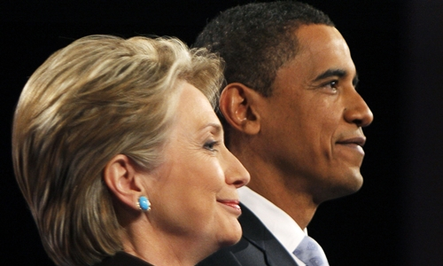

Thế Giới
thứ 7 ngày 18/06/2016
Hillary Clinton có thể trông cậy gì ở Tổng thống Obama
Tổng thống Obama với uy tín đang lên có thể giúp bà Hillary Clinton giành được cử tri tại nhiều bang có xu hướng độc lập, hoặc thậm chí thân đảng Cộng hòa.
Sau khi ông George W. Bush của đảng Cộng hòa giành chiến thắng tại bang New Hampshire, với những khu vực có nhiều cử tri như Manchester và Nashua, ông Obama thuộc đảng Dân chủ đã xoay chuyển cục diện và chiến thắng tại các bang này trong cả hai kỳ tổng tuyển cử sau đó, theo New York Times.
Ông Bush cũng từng chiến thắng tại Ohio, trong đó có thành phố Cincinnati cùng khu vực lân cận với đa số cử tri da trắng năm 2004. 8 năm sau, ông Obama cũng chiến thắng tại chính địa bàn này với cách biệt lớn. Các bang Colorado và Virginia cũng từng ủng hộ ông Bush trước khi chuyển sang ủng hộ ông Obama trong các kỳ bầu cử sau đó.
Và giờ, khi ông Obama chính thức tuyên bố hậu thuẫn bà Hillary Clinton, các cố vấn của ông chủ Nhà Trắng đang rất nóng lòng sử dụng uy tín chính trị tại các bang trên, cũng như các bang "chiến trường" (những bang chưa ngả về đảng nào) để nối dài chuỗi chiến thắng của đảng Dân chủ trong kỳ tổng tuyển cử tới. Họ xem ông Obama như "vũ khí" đặc biệt - một tổng thống đương nhiệm được yêu mến - trong chiến dịch đánh bại đối thủ Donald Trump của đảng Cộng hòa.
Các chiến lược gia chính trị tại Nhà Trắng cũng như trong chiến dịch tranh cử của bà Clinton đang bắt đầu xây dựng một lịch trình chi tiết cho ông Obama, sau khi ông chính thức tuyên bố hậu thuẫn cựu ngoại trưởng hồi tuần trước.
Ngày 15/6, hai người dự kiến có lần xuất hiện đầu tiên trước công chúng kể từ khi bà Clinton giành đủ số phiếu để được đảng đề cử. Địa bàn được chọn là thành phố Green Bay, bang Wisconsin. Đây cũng là thành phố nơi ông Obama từng lật ngược thế cờ cho đảng Dân chủ.
Dù vậy, ít có khả năng ông Obama và bà Clinton sẽ thường xuyên xuất hiện cùng nhau trên hành trình vận động cử tri. Thay vào đó, ông Obama sẽ một mình di chuyển qua các khu ngoại ô có đông đảo cử tri da trắng tại các bang trung- tây cùng khu vực vành đai công nghiệp cũ như New York, Pennsylvania, West Virginia, Ohio, Indiana, Michigan, Illinois và Wisconsin. Tổng thống Mỹ cũng dự kiến tới gặp các cộng đồng người Mỹ gốc phi tại các bang như North Carolina và Virginia.
Ông Obama cũng sẽ tiếp xúc các nhóm cử tri độc lập và các nhóm khác tại New Hampshire và Iowa, lôi kéo cử tri trẻ tuổi, cử tri gốc Latin và gốc Á tại các bang có tính cạnh tranh cao như Colorado, Florida và Nevada.
"Tổng thống chắc chắn sẽ dành thời gian để vận động những người ủng hộ ông bầu cho bà Clinton", bà Jen Psaki, giám đốc truyền thông của ông Obama nói. "Ông ấy cũng sẽ tiếp cận các cộng đồng nơi người dân chưa đưa ra quyết định, nơi họ đang trông đợi sẽ có một cuộc thảo luận về những lựa chọn phía trước".
Các cố vấn của bà Clinton mô tả ông Obama như một tổng thống đương nhiệm hiếm hoi có thể giúp sức cho bà tại toàn bộ các bang chưa ngả theo đảng nào trong kỳ tổng tuyển cử. Những người tiền nhiệm của ông Obama từng nắm giữ hai nhiệm kỳ như ông Bush hay Bill Clinton đều không được chào đón khi họ tham gia các cuộc vận động như vậy cho các ứng viên John McCain và Al Gore.
Việc tập trung vào thu hút cử tri độc lập và phụ nữ tại các vùng ngoại ô, và việc tổng thống vận động thay mặt cho bà Clinton nhiều khả năng sẽ còn được đẩy mạnh khi tới gần ngày bầu cử. Trong tháng 10, ông Obama dự kiến sẽ đáp Air Force One tới nhiều địa bàn mà ông được tin sẽ giúp lôi kéo những cử tri Dân chủ truyền thống đi bỏ phiếu.
Ông Obama từng chứng tỏ mình rất giỏi trong việc thu hút các cử tri da màu. Năm 2004, 13,2 triệu người Mỹ gốc Phi đã tham gia bầu cử tổng thống. Năm 2012, con số này là hơn 17,6 triệu người. Ông Obama cũng đã nâng được tỷ lệ cử tri da màu ủng hộ mình, điều mà đội ngũ của bà Clinton đang hy vọng ông cũng sẽ làm được cho nữ ứng viên này. Năm 2004, ông John Kerry được 86% cử tri da màu ủng hộ, nhưng đến năm 2012, tỷ lệ này của ông Obama là 96%.
Các tin khác
Google PolyNews